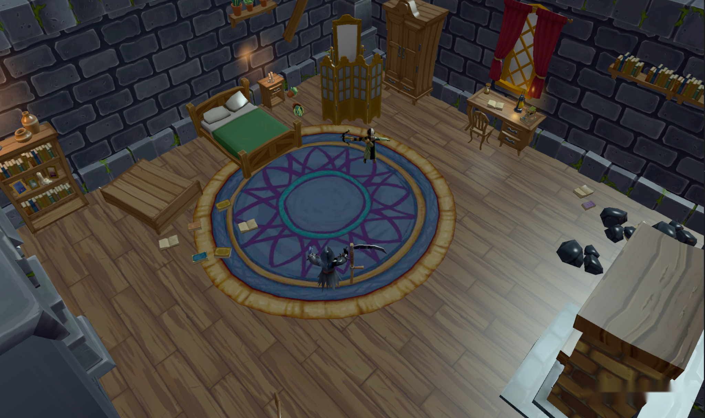
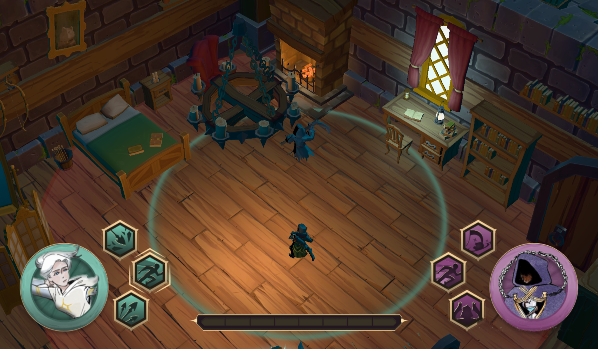
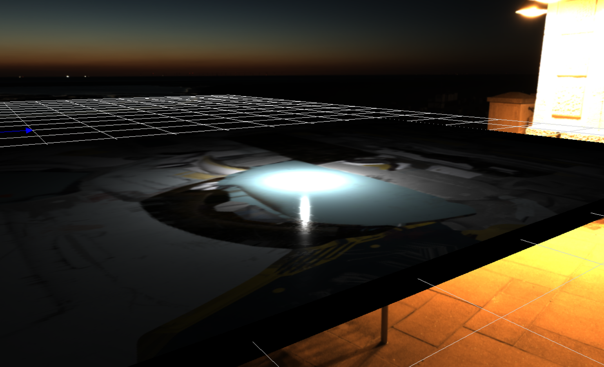
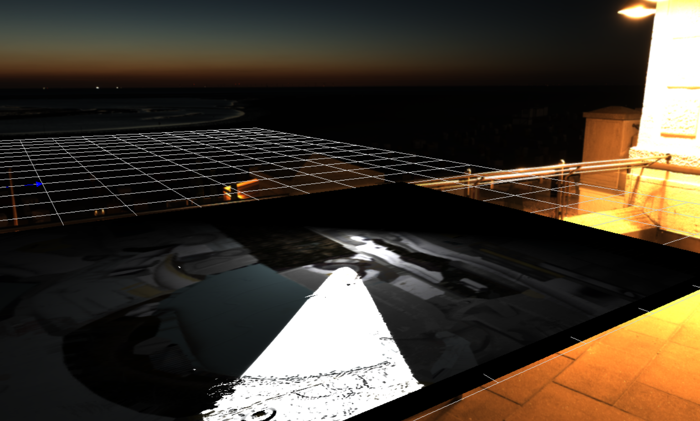
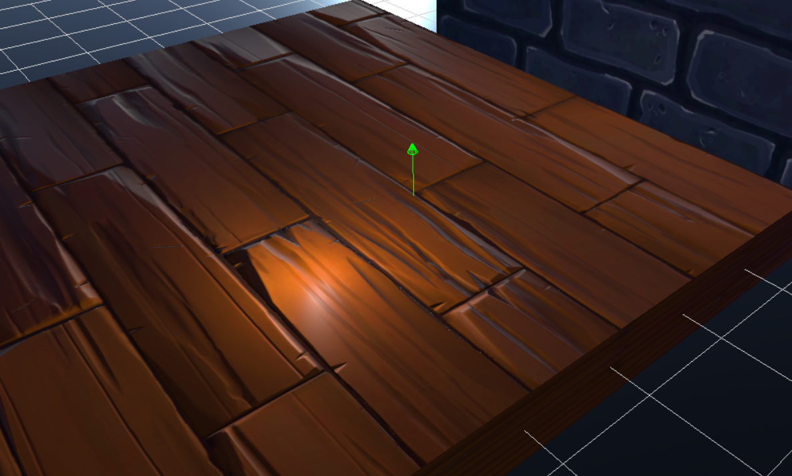

Physically Based Rendering
Overview
In my Master's Degree project Bound by Death, we needed a good atmosphere for our dark fantasy game, and following our teacher's advise, we decided that we wanted to have PBR for a realistic lighting in order to mkae the best atmosphere possible.
Me and other classmate took the task, where the objective was change the basic Phong lighting that we had at the beginning for a complete forward PBR pipeline, with support for base color, metallic, roughness, normal map, emissive and AO textures, and compatible with our current light gameobjects, Point Light, Spot Light and Directional Light.


Problems and objectives
Since we had a basic Phong lighting system, we only had support for base color textures and both metallic and roughness factor, but nothing more, so with that in mind we started to plan the tasks.
- First task: Add support for metallic, roughness, normal map, emissive and AO textures.
- Second task: Implement normal calculations and the new render equation on the Pixel Shader.
For the first task me and my classmate worked together.
For the second, we worked together on implementing the metallic-roughness calculations, and then I supported my classmate with the implementation of the normal calculations, since I jumped to another task.
Technical Implementation
First task: Support for new textures.
The first thing we did was to modify the material data struct that we send to the pixel shader, before it had only:
- The base color value.
- If the material contains a base color texture.
- Metallic factor.
- Roughness factor.
- 8 bytes of padding to align memory with HLSL cBuffers.
So first we decided that we will use unity texture channel's standard for metallic, roughness and AO textures.
- R channel is AO.
- G channel is roughness.
- B channel is metallic.
Then, in the material data struct we added bools to indicate if the material contains metallic/roughenn/AO txture, normal map texture and emissve texture, and two values, normal factor and emissive color value, so the final struct contains:
- The base color value.
- If the material contains a base color texture.
- Metallic factor.
- Roughness factor.
- If the material contains a metallic/roughness/AO texture.
- Normal factor.
- If the material contains a normal map texture.
- Emissive color value.
- If the material contains a emissive texture.
- 12 bytes of padding to align memory with HLSL cBuffers.
And with the new material data, we modified the creation of the material from a GLTF file to load the new textures and generate the updated material data.
Then modified the Root Signature of the pipeline to support the new textures inside the Descriptor Table for Shader Resource Views that we already had.
Finally, we modified the cBuffer of the material in the HLSL to match the new material data struct, and added the registers for the new textures.
Second task: Normal and light calculations.
Following our teacher's advice and class materials, we implemented the Cook-Torrance BRDF model:
- Schlick's Fproximation for the fresnel effect.
- Smith Masking Function for microfacet visibility.
- GGX Normal Distribution Function for microfacet distribution.
After that I jumped to another task, but gave support to my classmate to do the normal unpacking and transformation from tangent space to world space.
Chalenges and problem-solving
We had 2 major issues during this development:
Textures allocation.
Before this implementation, we only had one texture for mesh, so we just stored the SRV and use its the GPU Handle to send it to the shader, but now we needed all the textures to be contiguous in memory.
For this, we thougt about a reusable way to allocate a block of memory with configurable size inside a heap and get CPU and GPU Handles to the first element of this block.
Finally, another classmate that was already working on the Views made this implementation
Color space problems on textures.
When supporting my classmate with the normal calculations, we faced a problem where, when applying the normal tangent to world space calculations, the light affecting the meshes was distorted.
The problem was that in the texture loading process, all textures were being initialized as a SRGB textures, and then depending on the type of texture, the color space was changed to linear, that made the normal map texture colors to change, so the resultant normal vectors were shifted.
To fix this, we changed the texture loading process to initialize each texture with the color space that it has in the GLTF file.



Take aways and next steps
This task is my first complex task with graphics, and it is what lighted my interest in graphics programming.
With it I learned how light is simulated in a computer and the maths behind it, and how to handle sending data to the shaders with the Root Signature in a efficient way.
This implementation of PBR is definitive due time limitations in the Master's Degree, but in the future I plan to add support for more functionalities like opacity, anistropy or subsurface scattering.